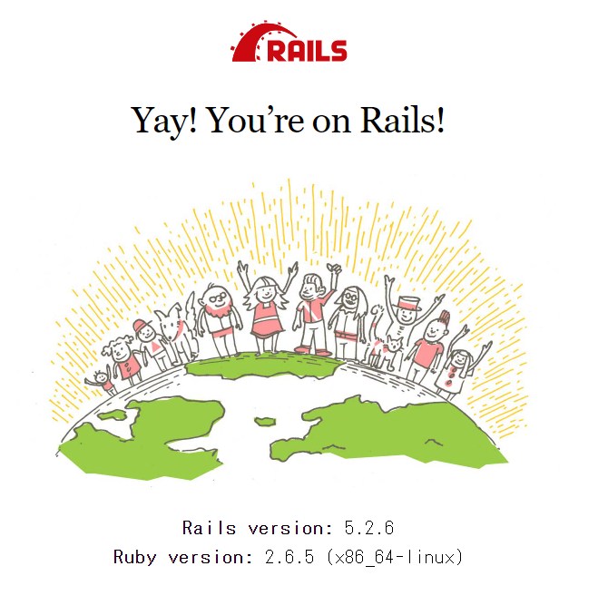
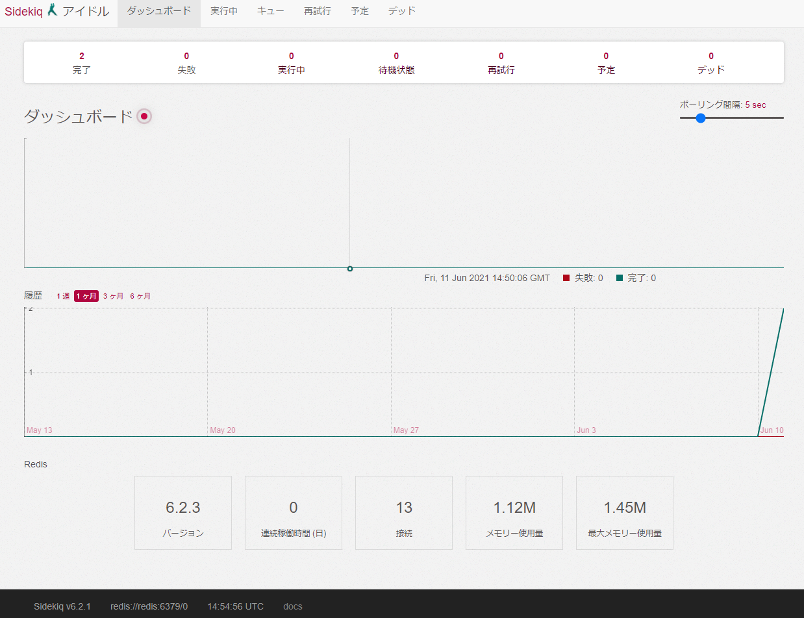

今までRedisとSidekiqを使ったことがなかったのでdocker-composeで環境を作ってみようと思います。
せっかくなので、DBはMySQLではなくPostgreSQLにしてみました。特に意味はありません！
一通り動作確認できることが今回のゴールです。
プロジェクトの作成
mkdir -p ~/tmp/sample-rails
cd ~/tmp/sample-rails
Dockerfileの作成
- Ruby: 2.6.5
vi Dockerfile
FROM ruby:2.6.5
RUN apt-get update -qq && \
apt-get install -y build-essential \
libpq-dev \
nodejs
RUN mkdir /app
ENV APP_ROOT /app
WORKDIR $APP_ROOT
COPY ./Gemfile $APP_ROOT/Gemfile
COPY ./Gemfile.lock $APP_ROOT/Gemfile.lock
RUN bundle install
COPY . $APP_ROOT
Gemfileの作成
- Rails: 5.2.6
vi Gemfile
source 'https://rubygems.org'
gem 'rails', '5.2.6'
Gemfile.lockの作成
touch Gemfile.lock
docker-compose.ymlの作成
vi docker-compose.yml
version: '3'
services:
web:
build: .
tty: true
stdin_open: true
command: rails s -p 3000 -b '0.0.0.0'
volumes:
- .:/app
- bundle_data:/usr/local/bundle
ports:
- "3000:3000"
depends_on:
- db
- redis
environment:
REDIS_URL: redis://redis:6379
db:
image: postgres
volumes:
- postgres:/var/lib/postgresql/data
ports:
- "5432:5432"
environment:
POSTGRES_USER: root
POSTGRES_PASSWORD: app_dev_password
POSTGRES_DB: app_dev
redis:
image: redis
command: redis-server --appendonly yes
ports:
- "6379:6379"
volumes:
- redis:/var/lib/redis/data
sidekiq:
build: .
command: bundle exec sidekiq
volumes:
- .:/app
- bundle_data:/usr/local/bundle
depends_on:
- db
- redis
environment:
REDIS_URL: redis://redis:6379
volumes:
bundle_data:
postgres:
redis:
プロジェクトをビルド
docker-compose run web rails new . --force --database=postgresql --skip-bundle
WSL上のUbutu環境なので下記コマンドを実行しておく
sudo chown -R 1000:1000 .
database.ymlの編集
vi config/database.yml
default: &default
adapter: postgresql
encoding: unicode
host: db
username: root
password: app_dev_password
pool: <%= ENV.fetch("RAILS_MAX_THREADS") { 5 } %>
コンテナビルド&起動
この時点ではsidekiqコンテナは起動に失敗します。
docker-compose build
docker-compose up
gemインストール
Gemfileに追加。
gem 'sidekiq'
bundle installする。
docker-compose run web bundle install
sidekiqの設定
routesに追加。
require 'sidekiq/web'
Rails.application.routes.draw do
mount Sidekiq::Web, at: '/sidekiq'
end
config/initializers/sidekiq.rbを作成する。
Sidekiq.configure_server do |config|
config.redis = { url: ENV["REDIS_URL"] }
end
Sidekiq.configure_client do |config|
config.redis = { url: ENV["REDIS_URL"] }
end
DB作成
docker-compose run web rails db:create
再度起動しなおす
sidekiqのgemを入れたので今度は全てのコンテナが起動する。
docker-compose down
docker-compose up
http://localhost:3000/ にアクセス
いつもの画面が表示されていればOK。

sidekiqが動作するか確認する
ワーカーを作成する。
docker-compose exec web rails g sidekiq:worker Hello
下記ファイルが作成される。
create app/workers/hello_worker.rb
create test/workers/hello_worker_test.rb
app/workers/hello_worker.rbを編集する。
class HelloWorker
include Sidekiq::Worker
def perform(*args)
puts "Hello"
end
end
sidekiqはファイルを編集したら再度起動しないと読み込まないらしいので再起動。
docker-compose down
docker-compose up
ワーカーをキューに登録する。
正常に登録されると、IDのような文字列が表示される。
docker-compose exec web rails c
irb(main):001:0> HelloWorker.perform_async
=> "702ce6a25525ee495fac36ef"
キューに登録したワーカーはすぐに実行される。
sidekiqコンテナのログを確認する。
sidekiq_1 | 2021-06-11T14:53:41.775Z pid=1 tid=grbnhzgoh class=HelloWorker jid=702ce6a25525ee495fac36ef INFO: start
sidekiq_1 | Hello
sidekiq_1 | 2021-06-11T14:53:41.775Z pid=1 tid=grbnhzgoh class=HelloWorker jid=702ce6a25525ee495fac36ef elapsed=0.0 INFO: done
Helloが出力されていることが確認できた。
また、 http://localhost:3000/sidekiq にアクセスすると、次のようにダッシュボードが表示されます。

Redisが動作しているか確認する
docker-compose exec redis /bin/bash
いちおう、redis-cli動作して値が保存されていることは確認できたが、
sidekiqのキューが保存されているかなどはいまいち理解できていないので次回の宿題としたい。
root@d0444689a353:/data# redis-cli
127.0.0.1:6379> keys *
1) "stat:failed:2021-06-11"
2) "queues"
3) "processes"
4) "stat:failed"
5) "stat:processed:2021-06-11"
6) "stat:processed"
7) "25ef69e9cc2a:1:3caa06ecd9cc"
参考：docker-compose.ymlの説明
webコンテナの説明
web:
build: .
tty: true
stdin_open: true
command: rails s -p 3000 -b '0.0.0.0'
volumes:
- .:/app
- bundle_data:/usr/local/bundle
ports:
- "3000:3000"
depends_on:
- db
- redis
environment:
REDIS_URL: redis://redis:6379
- build
- Dockerfileを参照してイメージをビルド
- tty, stdin_open
- docker run -it で学ぶ tty とか標準入出力とかファイルディスクリプタとか - valid,invalid
- tty: 制御するターミナル(デバイス)を割り当てる？これがないとターミナルでの操作ができないようなイメージ
- stdin_open: 標準入力を受け付ける？これがないとターミナルはあるけど、入力コマンドを打っても受け付けないイメージ
- command
- docker - コマンドはdocker-compose.ymlとDockerfileのどちらで定義するほうがいい？ - スタック・オーバーフロー
docker-compose upでコンテナ起動時に実行されるコマンド ※buildのCMDはビルド時にしか実行されないので、コンテナ起動時に実行したいコマンドはこっちに記載する-pサーバーを起動するときのポート番号-bバインドするIPアドレスを指定
- volumes
.:/appでコンテナの/appディレクトリをホストのカレントディレクトリにマウントするbundle_data:/usr/local/bundleでコンテナのgemデータを名前付きのデータボリュームbundle_data(Docker Engine上に確保した領域)にマウントしてデータを永続化する。
- depends_on
- docker-compose depends_onとlinksの違い - Qiita
- コンテナが
db, redis=>webの順で起動する。 - version2以降はcomposeファイルに書かれたすべてのサービス間に自動的にリンクを張る仕様らしい。なのでサービス名やエイリアス名で接続できるらしい。linkなどの指定は不要。
docker-compose.yml: dbコンテナの説明
db:
image: postgres
volumes:
- postgres:/var/lib/postgresql/data
ports:
- "5432:5432"
environment:
POSTGRES_USER: root
POSTGRES_PASSWORD: app_dev_password
POSTGRES_DB: app_dev
- image
- PostgreSQLのイメージ指定
- volumes
- デフォルトでPostgreSQLのデータは
var/lib/postgresql/dataに保存される。名前付きのデータボリュームdb_data(Docker Engine上に確保した領域)にマウントしてデータを永続化する。
- デフォルトでPostgreSQLのデータは
- environment
POSTGRES_USER任意。POSTGRES_PASSWORDと併せて使用。指定したユーザーにスーパーユーザー権限を付与。POSTGRES_PASSWORD必須。スーパーユーザーのパスワードを指定。POSTGRES_DB任意。データベースの名前指定。指定しなければPOSTGRES_USERの値が使用される。
docker-compose.yml: redisコンテナの説明
redis:
image: redis
command: redis-server --appendonly yes
ports:
- "6379:6379"
volumes:
- redis:/var/lib/redis/data
- redis
- Redisのデータ永続化
- Redis Persistence – Redis
- 最も人気あるキーバリューストア
- Redisは「REmote DIctionary Server」という意味
- image
- redisのイメージ指定
- command
- AOFの有効化
docker-compose.yml: sidekiqコンテナの説明
sidekiq:
build: .
command: bundle exec sidekiq
volumes:
- .:/app
- bundle_data:/usr/local/bundle
depends_on:
- db
- redis
environment:
REDIS_URL: redis://redis:6379
- build
- webと同じDockerfileを使う
- comand
- sidekiqを実行
参考にした記事など
docker-composeでmysql+redis+sidekiqなrails環境を作る - Qiita
sinatraとsidekiqを組み合わせて、簡単なWeb APIを作ってみた - tkak’s tech blog